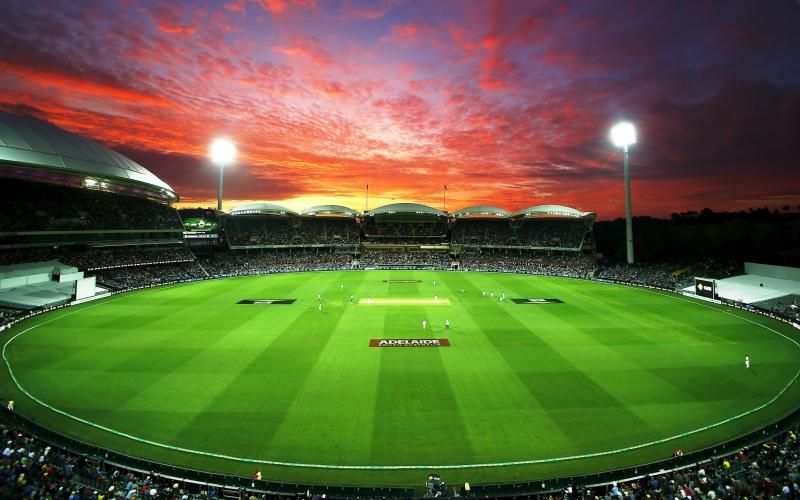

Pakistan super league is a professional Twenty20 cricket league, founded on 9 September 2015 with five teams and now comprises six teams.Instead of operating as an association of independently owned teams, the league is a single entity in which each franchise is owned and controlled by investors.
The PSL season runs between the months of February and March, with each team playing matches in double round robin format; the top four teams with the best record qualify for the playoffs and culminates in the championship game, the PSL Cup Final. The league is based out of the Pakistan Cricket Board office in Lahore.
The PSL is played in a double round-robin format. Every team plays each other twice and the top four advance to the Playoffs.
The league follows the rules and regulations dictated by the International Cricket Council, although it introduced DRS system in T20s which was later emulated by International Cricket Council as well. In the group stage, two points are awarded for a win, one for a no-result and none for a loss. In the event of tied scores after both teams have faced their quota of overs, a super over is used to determine the match winner. In the group stage teams are ranked on the following criteria: